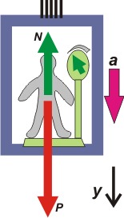
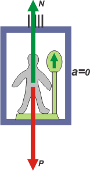
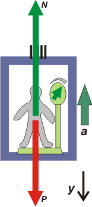

NO ME SALEN
PROBLEMAS RESUELTOS DE FÍSICA DEL CBC
(Leyes de Newton, vínculos)
|
|

|
| |
 |
FIS d2 - Un pasajero que viaja en ascensor está parado
sobre una balanza que marca un peso menor
en un 40% al que indicaría si el ascensor estuviese
detenido. Entonces, es posible que en
ese momento el ascensor esté:
a) subiendo cada vez más rápido
b) subiendo cada vez más despacio
c) subiendo con velocidad constante
d) bajando cada vez más despacio
e) bajando con velocidad constante
f) bajando en caída libre |
|
Mirá este problema es recontra súper híper mega sencillo. Es igualito al 1.3 de dinámica, el anterior a éste. Difiere simplemente en que una de las fuerzas que actua es apenas un poquito menos evidente, y todo ocurre en un cuarto cerrado, el ascensor, mientras que el 1.3 transcurre al aire abierto. Pero es lo mismo. Una pavada atómica. Lo curioso es que a los profesores de física le encanta tomar este ejercicio en los exámenes y el resultado es siempre el mismo: una masacre generacional. Miralo conmigo, y después contame.
Como todos los problemas de dinámica tenés que empezar por un DCL. Si no me hacés caso no me hago responsable de tu futuro académico. Es una obligación moral hacer bien el DCL, si lo hacés mal o no lo hacés el problema no te sale ni con la ayuda de Maldacena.
Ahí tenés el DCL correcto. Sobre el chabón actúan solamente dos fuerzas: su propio peso, P, que es constante y vale siempre lo mismo haga lo que haga el ascensor. P no cambia, siempre es vertical y apunta hacia abajo. Si el pasajero fuese yo, P valdría 80 kgf, o si querés 800 N; puede cambiar con los meses y los años, pero no en el transcurso del problema éste, ¿ta claro?
|
La otra fuerza que actúa sobre el ñato es la fuerza que el piso del ascensor (ok, en este caso el piso de la balanza) hace sobre él. En una fuerza perpendicular al piso, por eso la llamamos normal, N, porque normal es sinónimo de perpendicular, o sea que forma 90 grados con el piso.
La balanza mide la fuerza N. No mide el peso -como todos creen-, o en todo caso lo mide pero en forma indirecta. La próxima vez que vayas a una farmacia a pesarte podés comprobarlo. Basta con que te muevas un poquito arriba de la balanza, que hagas pequeños saltitos o subas y bajes los brazos, vas a ver que la aguja marca cosas raras. No indica un valor constante como tu peso, marca las variaciones de la fuerza que el piso hace sobre tus zapatos (o viceversa, que es lo mismo). Para que esa fuerza, la normal, indique el valor de tu peso hay que estar quieto. Tu aceleración debe ser cero... y esto nos lleva a la resolución del ejercicio. |
 |
Es muy sencilla, es una aplicación inmediata de la segunda ley de Newton que dice que la sumatoria de todas las fuerzas que actúen sobre un cuerpo es igual al producto de su masa por su aceleración, ΣF = m a.
Acá todos los vectores: las dos fuerzas y la aceleración, son verticales. No importa el SR que elijas, para arriba o para abajo. Lo que apunte para el mismo lado tiene que tener el mismo signo. Por ejemplo en un SR que apunte hacia abajo...
P – N = m a
Para concretar: si N es mayor que P la aceleración va hacia arriba. Si N es igual a P la aceleración vale cero (y sólo entonces, la balanza indica mi peso, y sé si engordé o mantengo la línea). Y si N es menor que P la aceleración va hacia abajo.
Es justamente el último caso el relatado por el enunciado, Dice que la balanza indica un valor un 40% menos que su peso (en mi caso indicaría... a ver... 48 kgf), eso indica que la aceleración va para abajo. El resto es interpretación cinemática. Si la aceleración va para abajo, el ascensor baja cada vez más rápido, o sube cada vez más lento. Por suerte de estas dos sólo hay una entre las opciones. |
| |
b) subiendo cada vez más despacio |
|
|
| Ya que estamos analicemos todas las opciones y nos sacamos bien las dudas |
Las dos opciones que siguen describen situaciones diferentes, pero en ambas la aceleración vale cero.
c) subiendo con velocidad constante
e) bajando con velocidad constante
(A propósito, faltaría una opción más para esta situación dinámica... ¿te animás a decir cuál es?)
Bueno, en cualquiera de las tres situaciones se da que la fuerza que hace el piso de la balanza, la normal, es igual al peso del pasajero y es en ése momento en el que debe aprovechar para conocer su peso, si le interesa. (El problema es que los ascensores no suelen tener un acelerómetro entre el instrumental, de modo que no son buenos lugares para colocar balanzas). |
 |
Las opciones siguientes describen situaciones en las que la aceleración apunta hacia arriba, espero que te quede claro y concuerdes conmigo, a ver...
a) subiendo cada vez más rápido
d) bajando cada vez más despacio
En ambos casos debe ocurrir que la normal sea mayor que el peso del pasajero. En esos momentos conviene no mirar la balanza para no asustarse. No es tu caso, porque vos ya entendiste cómo viene el asunto, pero la mayoría de los mortales... sobre todo la mayoría de las gorditas...
Y nos queda una opción entre las respuestas del enunciado:
f) bajando en caída libre
Cuando las cosas, ascensores, personas, pianos, elefantes, lo que sea, caen en caída libre, su aceleración apunta hacia abajo y adquiere un valor especial que vos conocés, aproximadamente 10 m/s². O sea se trata de un caso especial de la primera situación. Pero si hacés las cuentas vas a ver que en ese caso ocurre un fenómeno singular: la normal vale cero. La balanza no marca 48 ni 24 ... ¡marca cero! |
 |
|
|
|
Dicho de otro modo, el pasajero se despega del piso, queda flotando... es más si tiene suficiente sangre fría como para hacer elucubraciones teóricas puede inferir: "O han cortado el interruptor de la gravedad, o... ¡diantres! ¡es probable que se hayan cortado los cables de ascensor!, ¡qué contrariedad!".
Bueno, che, quedó un poco largo pero creo que valía la pena. Un ejercicio como éste va incluído en 1 de cada 3,48 exámenes de física. Después no digas que No me salen no te lo había anticipado. Tenés uno idéntico, pero con un abordaje puramente cuantitativo en el ejercicio 1.13. Y otra variante más en el Adicional 20. Y hay más. |
 |
CHISME: Un pensamiento semejante al del pasajero con la cabeza fría indujo a Albert Einstein a formular la Teoría de la Relatividad General. Pasan cosas raras en los ascensores. Nunca te subas con un desconocido.
DESAFIO: ¿Cuánto vale la aceleración de este problema? (No vale hacer cuentas con mi peso ni con el tuyo, tenés que hacer las cuentas con el peso de este pasajero que vos no conocés, y no sabés si es gordito o flacucho). |
|
| Algunos derechos reservados, otros no.
Se permite su reproducción citando la fuente. Última actualización nov-06. Buenos Aires, Argentina. |
|
|
|